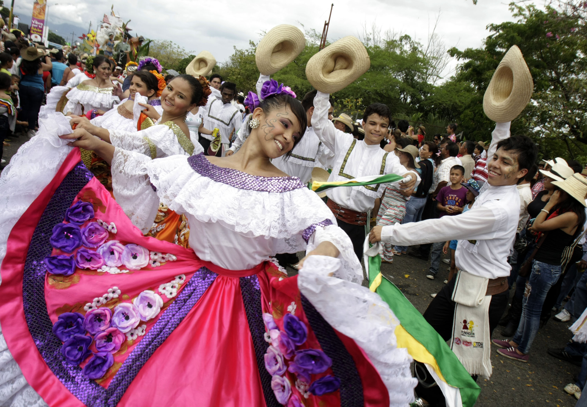

Fechas Importantes:
- Las festividades se celebran del 12 al 29 de junio de 2026, con diferentes actividades culturales y tradicionales durante esos días.
- Entre el 25 y el 29 de junio se realizan los eventos más importantes, incluyendo los desfiles principales y las presentaciones folclóricas más representativas.
- Este año tiene un significado especial, ya que se conmemoran los 90 años del Sanjuanero Huilense, símbolo de la cultura y el folclor del Huila.
